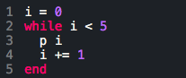
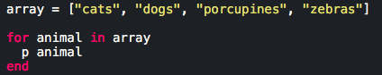
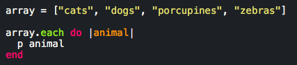
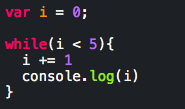
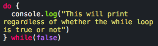

Ruby Loops
While
In Ruby you set a condition along with a block of code. As long as this condition remains true the block of code will run over and over again. When the condition returns false the code block breaks the loop.
Until
The until modifier works in an opposite fashion to while. For as long as a condition returns false a code block will continue to be run through until the condition computes to true.

For
The for loop assigns a variable once for each element in a given expression.
.each
This method works similarly to a for loop except for the fact that .each does not automatically reserve a scope for the new local variable that will be taking the place of an element in an expression. You must manually define it.
JavaScript Loops
For
Similarly to Ruby the 'for' loop assigns a variable to each element in an expression. For each iteration over the expression the variable changes to be equal to the value of each index in sequential order.

While
Performs a block of code if the condition passed with the loop returns true. As it is a loop, the code block repeats itself over and over until the condition returns false. Make sure your condition will break the loop or else you face the danger of crashing your program through loop overload!
Do
This loop functions in parallel to a while loop. As long as the condition supplied with the 'do' loop is true the code block nested within the loop will reiterate until the loop is broken by a false condition. However what sets this apart from its sibling 'while' loop is that upon activation, if the condition passes false, the code block will still continue to run. This loop iterates through itself at least once.
